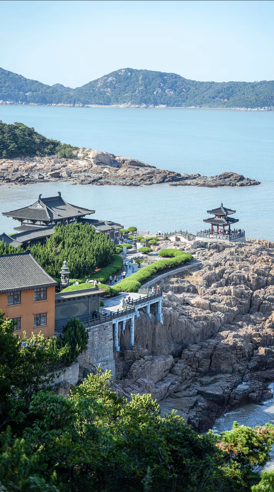
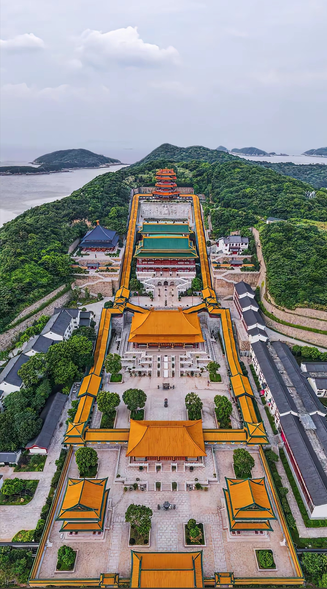
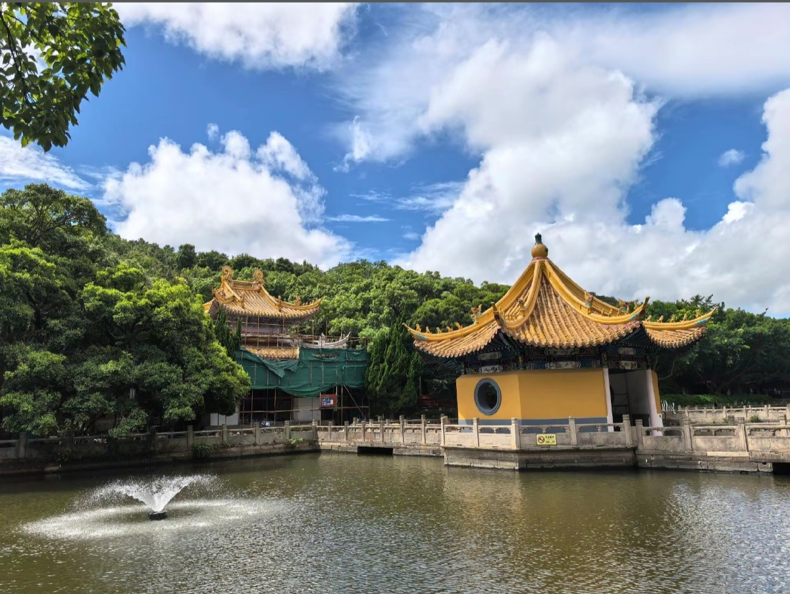
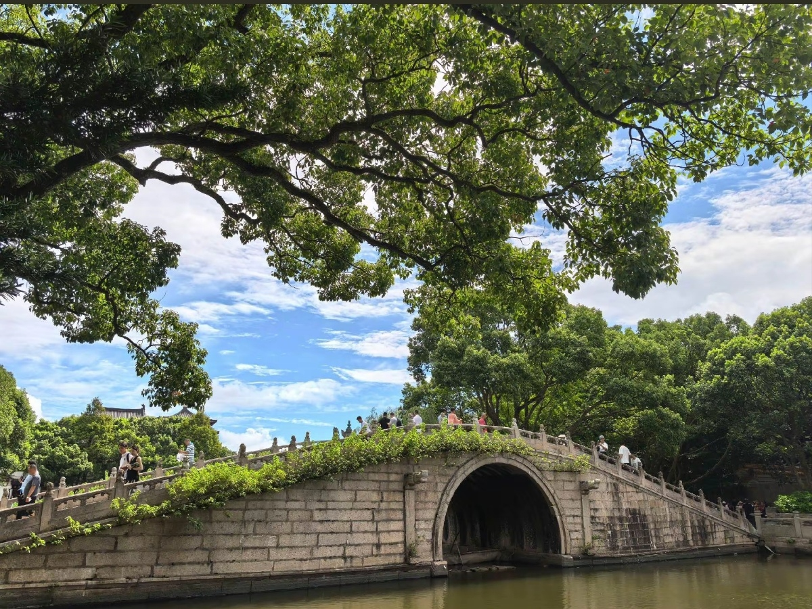
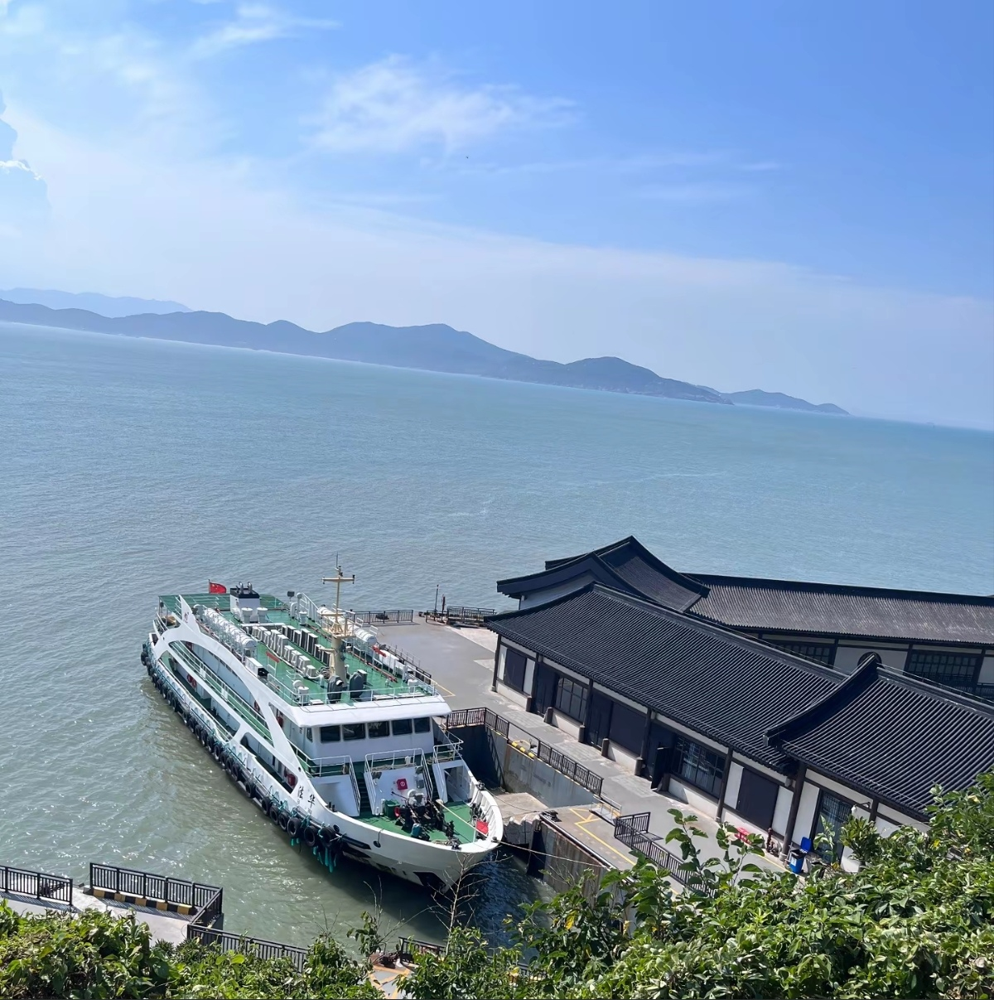
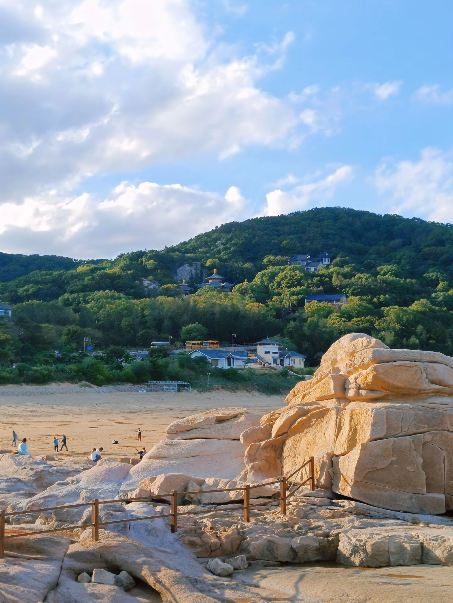

Putuo Mountain (Putuoshan) is one of China's four sacred Buddhist mountains, located on a small island in the Zhoushan Archipelago off the coast of Zhejiang Province. Dedicated to Guanyin (the Goddess of Mercy), Putuo has been a major Buddhist pilgrimage site for over 1,000 years. The island features stunning coastal scenery with ancient temples perched on rocky cliffs, golden-roofed monastery complexes, pristine beaches, and lush forests. The largest temple, Puji Temple, is a magnificent complex of halls and courtyards. Putuo combines spiritual significance with natural beauty — dramatic sea cliffs, sandy beaches, and crystal-clear waters make it a unique destination among China's sacred mountains.






From Shanghai: Bus to Shenjiawan Dock (2.5h, ¥50), then ferry to Putuo (1.5h, ¥100-130). Or direct ferry from Shanghai Wusongkou (4h, ¥150-200). Most popular route for tourists.
From Ningbo: Bus to Zhujiajian Dock (1.5h, ¥30), then ferry to Putuo (15 min, ¥30). Fastest route. High-speed ferry available (¥50, 10 min).
Zhoushan Putuoshan Airport: Flights from Beijing, Shanghai, Guangzhou. Airport to dock: taxi 20 min (¥50). Then ferry to island (15 min).
Walking & Bus: Island is small and walkable. Tourist buses connect major temples (¥5-10 per ride). No private cars allowed. Bicycles available for rent.
Route: Puji Temple → Fayu Temple → Huiji Temple (cable car) → Nanhai Guanyin Statue → Beach
Duration: 6-8 hours
Best for: First-time visitors, pilgrims
Day 1: Puji Temple → Fayu Temple → Evening chanting at temple
Day 2: Huiji Temple (sunrise) → Guanyin Statue → Rocky coast walk → Departure
Best for: Deep spiritual experience
Focus: Coastal scenery + temples + beach
Highlights: Thousand-Step Beach, Purple Bamboo Forest, Chaoyin Cave, Guanyin Statue
Duration: 1-2 days
Best Spots: Sunrise from Huiji Temple, Coastal cliffs, Stone bridge, Beach at sunset
Tips: Early morning for misty temple atmosphere; golden hour for coastal shots
Location: Inside major temples (Puji, Fayu)
Specialty: Vegetarian Buddhist meals, Tofu dishes, Seasonal vegetables
Hours: 10:30 AM - 1:00 PM (lunch only)
Location: Near Longwan Village and ferry dock
Specialty: Fresh seafood, Steamed fish, Shrimp, Crab
Hours: 10:00 AM - 9:00 PM
Location: Inside island hotels
Specialty: Buffet meals, Higher quality, Seafood sets
Hours: 7:00 AM - 9:00 PM
Location: Along main paths and temple areas
Specialty: Noodles, Rice cakes, Local pastries, Drinks
Hours: 7:00 AM - 8:00 PM
Location: Near Puji Temple and main scenic areas
Features: Convenient, Sea views, Restaurant
Note: Most popular; book early for peak season
Location: Inside temple complexes
Features: Authentic experience, Simple rooms, Vegetarian meals
Note: Basic facilities; unique spiritual atmosphere
Location: Near Thousand-Step Beach
Features: Ocean views, Quieter area, Modern amenities
Distance to Temples: 15-20 min walk or bus
Location: Zhujiajian (mainland side, 15 min ferry)
Features: More options, Beach resorts, Lower prices
Note: Good budget alternative; ferry to Putuo daily